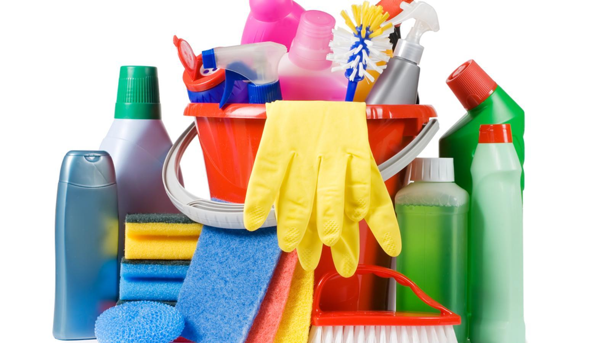

Insecticidas

Talio, cianuro, carbonatos, organofosforado, estricnina
Las sustancias químicas de uso cotidiano en el hogar y el trabajo pueden afectar nuestra salud y el medio ambiente. Estas sustancias pueden ser corrosivas, tóxicas o inflamables, y se convierten en residuos peligrosos.

Talio, cianuro, carbonatos, organofosforado, estricnina

hipoclorito, amonio, hidróxido de sodio, ácido nítrico, ácido acético

Amoniaco, nitratos, naftalina y percloroetileno y fragancias sintéticas

ácido metacrílico, metacrilato de metilo, metacrilato de etilo, hidroquinona

Mercurio, zinc, litio, cadmio, carbono, plata